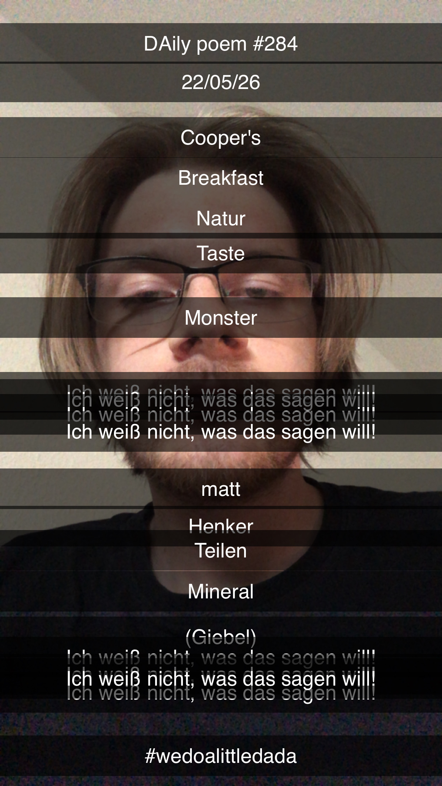

A Dash of Dada
[284]Cooper's
Breakfast
Natur
Taste
Monster
Ich weiß nicht, was das sagen will!
Ich weiß nicht, was das sagen will!
Ich weiß nicht, was das sagen will!
Ich weiß nicht, was das sagen will!
matt
Henker
Teilen
Mineral
(Giebel)
Ich weiß nicht, was das sagen will!
Ich weiß nicht, was das sagen will!
Ich weiß nicht, was das sagen will!
Ich weiß nicht, was das sagen will!
